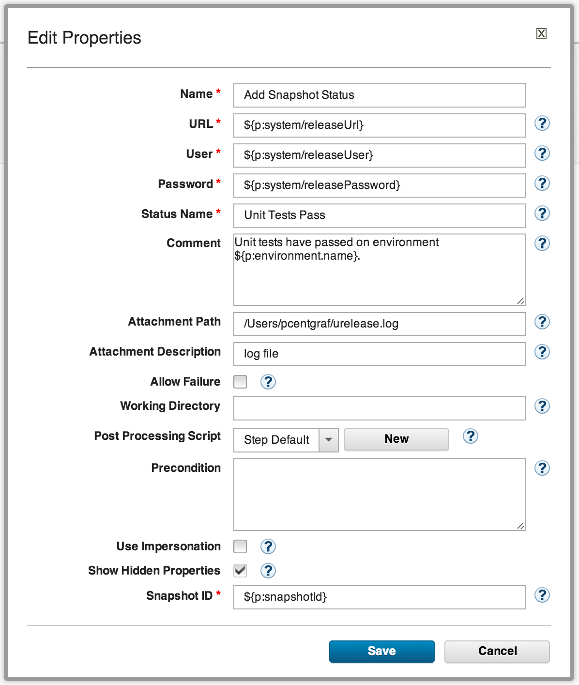

This article was originaly published in 2014.02.17
6.0.1.2 - February 17, 2014
This release of IBM UrbanCode Release is a maintenance release containing bug fixes and a few minor enhancements. This release is recommended for all customers.
Support for new UrbanCode Release plugin for UrbanCode Deploy
A new plugin is available for UrbanCode Deploy to support specific integration scenarios with UrbanCode Release, driven from component processes in Deploy. Two plugin steps are currently available:
Add Snapshot Status
This step allows a process to mark a snapshot or component version with a specific status and optionally upload an attachment or add a comment to the status in UrbanCode Release.

Get Release for Environment
This step works with the experimental Environment Reservation feature introduced in
UrbanCode Release 6.0.1.1
. Using this step, a Deploy process can query UrbanCode Release to determine the name of the release for which the current application environment is assigned. This name can then be used in other steps in the process, e.g. as part of a snapshot name or to perform branching logic within the process.

Release Summary
-
Recommended fixes for UrbanCode Release 6.0.1.1
-
New UCD Plugin steps:
-
Add Snapshot Status
-
Get Release for Environment
Release Notes
For information on documentation and support resources, software and hardware requirements and installation steps, see the
Getting Started
page.
This release has been superseded. We recommend installing the latest fix pack to ensure you have all known fixes.
Behavioral Changes
There are no known behavioral changes.
Fixes in this Release
A cumulative list of fixes in this release, and any future fix packs can be found
in this document
.
|
APAR
|
Description
|
|
|
In case of communication failure between UrbanCode Release and UrbanCode Deploy, some data corruption was possible. This has now been corrected, and no customer data loss has been reported.
|
Known Problems and Workarounds
When integrated with UrbanCode Deploy 6.0.1.1 or later, the pipeline view may fail to display current installed versions for all environments.
To search for additional post-release issues that IBM Rational Support documented, visit the
IBM Support portal.
Getting Started
Plan & Prepare
For fixes contained in this release, and any known issues, review the
release notes
.
For supported platforms and requirements, see the
system requirements
.
To get started quickly to try the software, IBM UrbanCode Release is shipped with an Apache Derby database. Apache Derby deployments are not supported for production environments. As you plan your production topology, review the
installation guide
Install the server
This release requires IBM Installation Manager version 1.7 or later for installation. See
download document
for details on this download.
This release is available for download for Passport Advantage and Passport Advantage Express clients, requiring authentication. This download is
available here.
Information for installing the server, see the
Installing server
section in the product documentation.
Learn
To learn more about new enhancements in this release, see
What’s New
To learn more about IBM UrbanCode Release, see the
documentation
For help installing or using IBM UrbanCode Release, post your questions in the
forums
or contact
support
To suggest an enhancement to the product, visit the
RFE Community
Get support
For information from support, including FAQs, visit the
IBM Support portal.
You can configure the support portal to view information about specific products.
{kind=link}